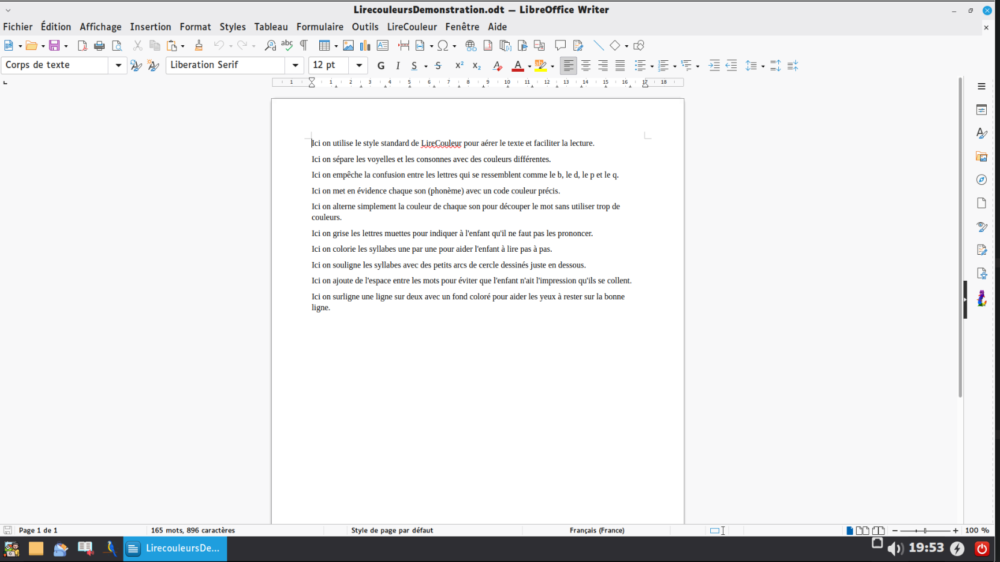
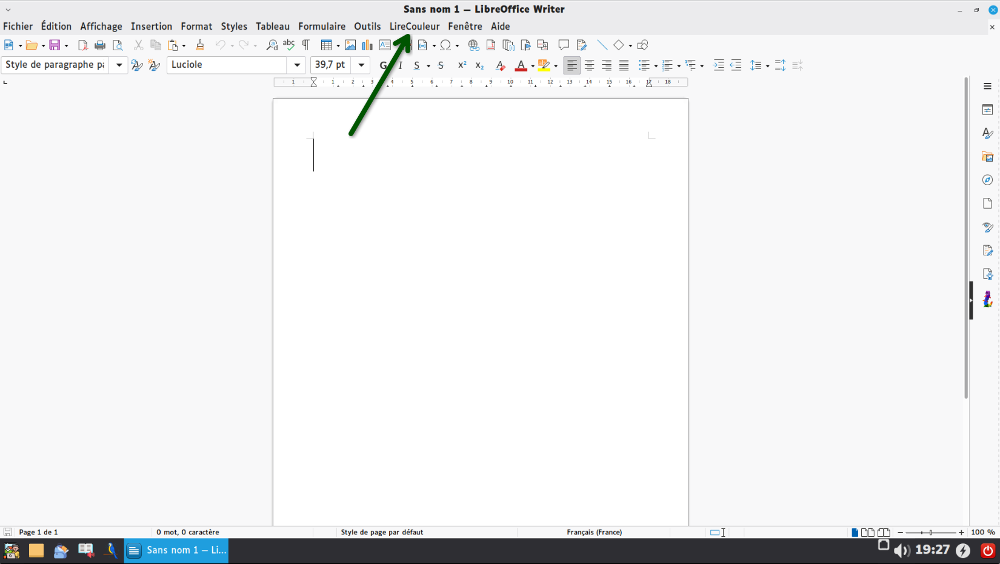
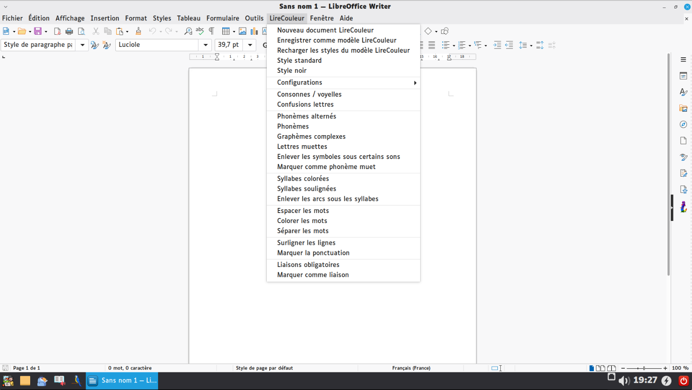
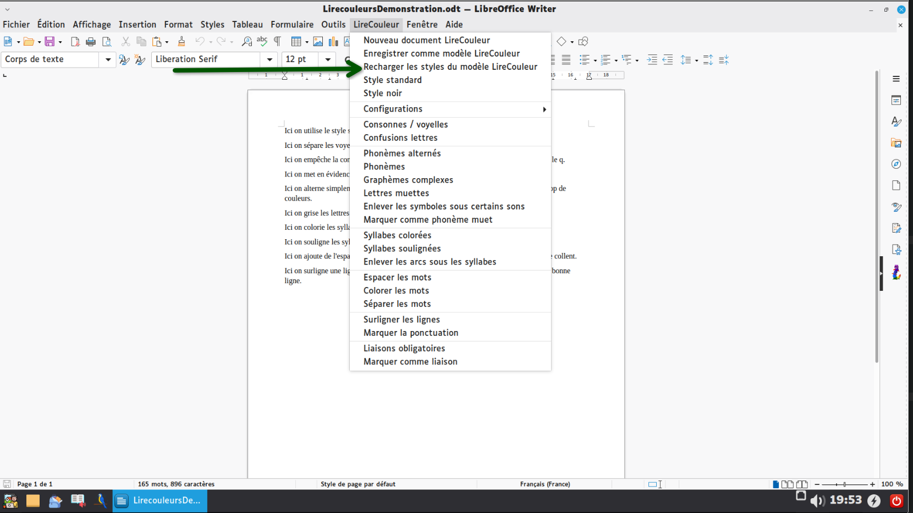
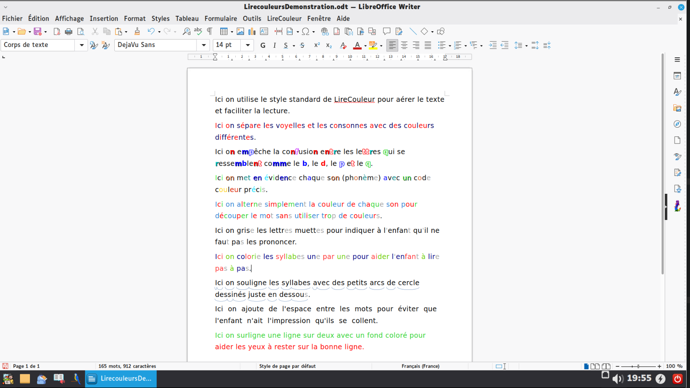

L'application Mes Leçons n'est pas qu'un simple traitement de texte. Elle intègre « LireCouleur », une boîte à outils conçue pour aider les enfants dyslexiques ou en apprentissage à déchiffrer n'importe quel texte sans s'épuiser. Voici comment transformer un texte difficile en document visuellement adapté à votre enfant, en 4 clics.
Le texte de départ
Ouvrez l'application Mes Leçons et tapez (ou ouvrez) le texte que votre enfant doit lire (une leçon, un poème, un exercice). Au départ, c'est un texte noir et blanc classique.

Le bouton magique
Regardez tout en haut de la fenêtre. Vous y trouverez un menu appelé LireCouleur.

Explorer le menu
Cliquez sur « LireCouleur » pour ouvrir le menu déroulant. Ne vous laissez pas impressionner par le jargon technique (phonèmes, graphèmes…) !
Pour l'utiliser : sélectionnez tout votre texte avec la souris, puis cliquez sur l'aide visuelle dont votre enfant a besoin.


Le résultat immédiat
En un seul clic, le texte s'adapte instantanément au cerveau de votre enfant pour soulager sa fatigue visuelle.

📚 Les outils disponibles
- Style standard : La base. L'outil utilise automatiquement une police adaptée et aère le texte pour une lecture plus reposante.
- Consonnes / voyelles : Sépare les lettres avec des couleurs différentes (souvent rouge et bleu), reprenant les codes classiques appris à l'école.
- Confusions lettres : Change la couleur des lettres qui se ressemblent (comme le b, d, p, q) pour éviter que le cerveau de l'enfant ne les inverse.
- Phonèmes : Donne une couleur spécifique à chaque son complexe (par exemple, le son « ou » ou « on ») pour faciliter le déchiffrage.
- Phonèmes alternés : Alterne simplement deux couleurs à chaque nouveau son pour découper le mot sans transformer le texte en arc-en-ciel.
- Lettres muettes : Grise les lettres qu'on ne prononce pas (comme le « ent » des verbes) pour que l'enfant sache qu'il faut les ignorer à voix haute.
- Syllabes colorées et soulignées : Découpe visuellement chaque mot syllabe par syllabe pour rassurer l'enfant dans sa lecture pas à pas.
- Séparer les mots : Ajoute de l'espace supplémentaire entre chaque mot pour les enfants qui ont l'impression que le texte se mélange.
- Surligner les lignes : Ajoute un fond coloré une ligne sur deux — guide parfait pour éviter à l'œil de sauter des lignes.